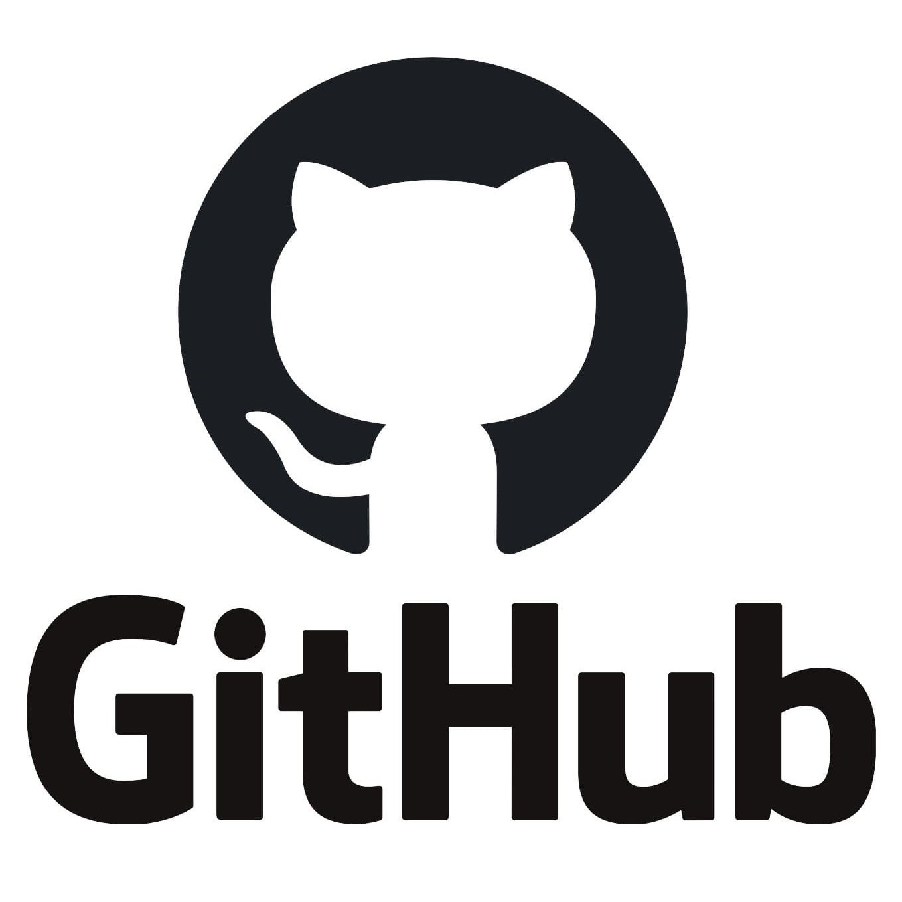

Taller: Uso de versiones de control como Git y plataformas de Github
Que es GIT y que es Github?
Cual es la diferencia?
Git
Un sistema control de versiones que permite el manejo de versiones del codigo y rastrear los cambios de este a traves del tiempo.
Este sistema permite a muchos programadores colaborar en un solo proyecto de manera eficiente y fluida.
Github
Plataforma de repositorios etc etc.

Logo de GitHubEl logo de GitHub representa al Octocat, una mascota híbrida que mezcla un gato y un pulpo.